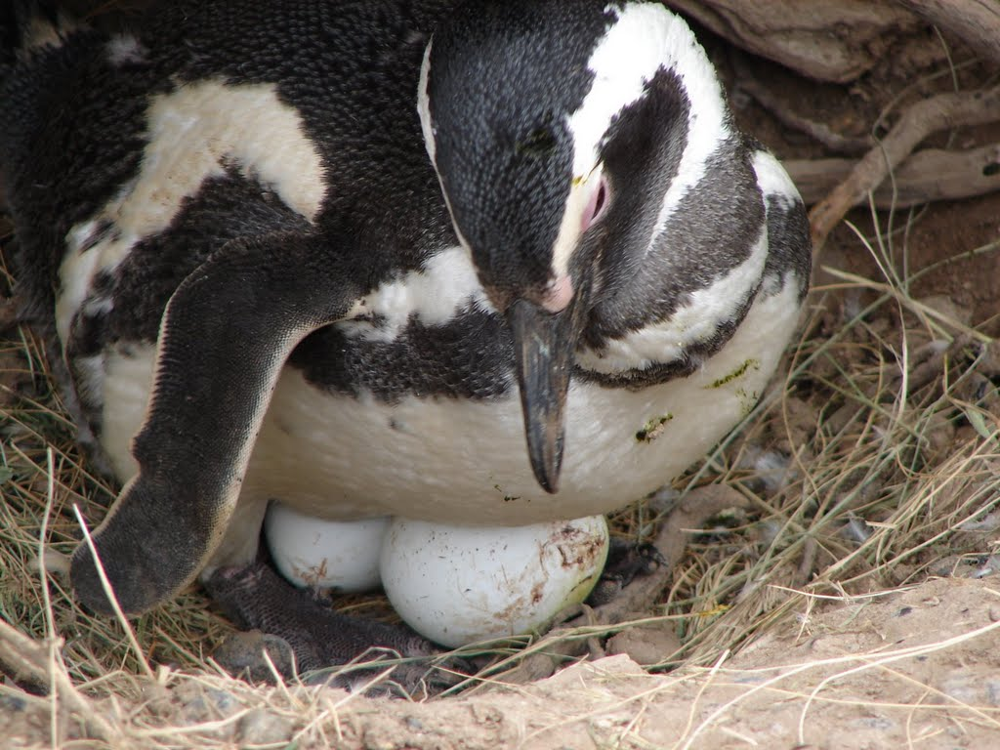
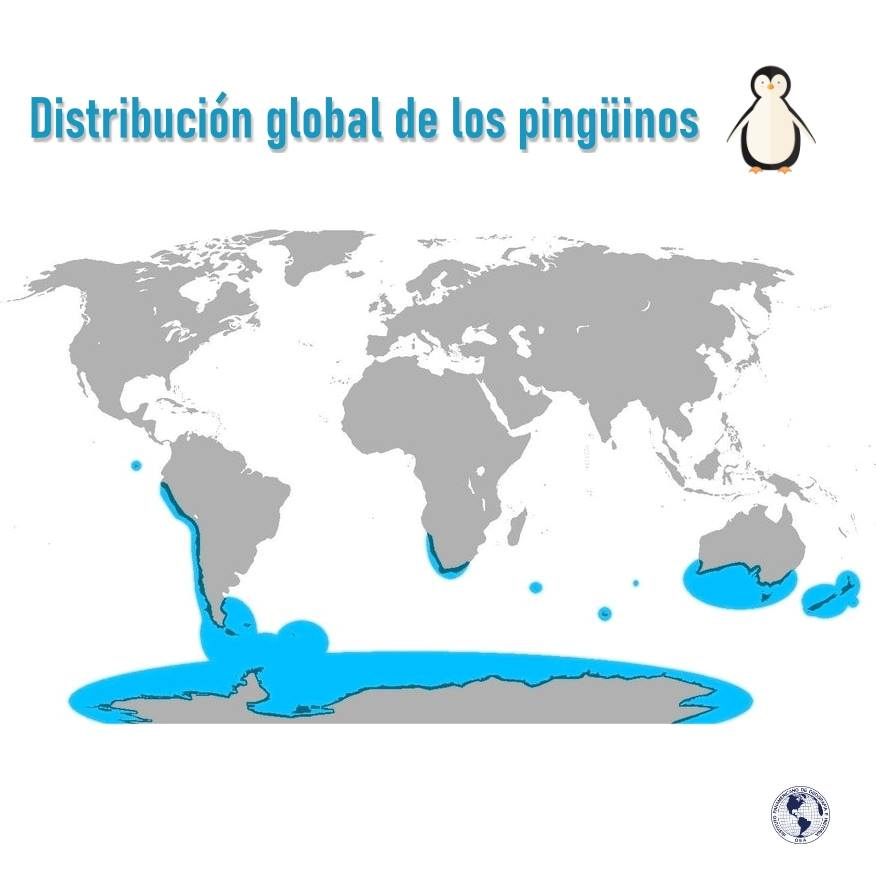

Adaptaciones generales Los pingüinos son las únicas aves vivientes no voladoras adaptadas al buceo propulsado por las alas. Por ello, sus alas se han convertido en aletas con huesos fuertemente comprimidos y articulaciones rígidas que impiden el movimiento independiente de los huesos del ala. Los huesos son más densos que los de otras aves, aumentando su resistencia a los impactos y aumentando también el peso del ave reduciendo su flotabilidad. Las patas están situadas muy atrás en el cuerpo, dificultando el desplazamiento en tierra, pero actuando como timones bajo el agua. Los pingüinos son capaces de alcanzar velocidades de hasta 60 km/h, aunque su velocidad normal oscila entre 5 y 10 km/h. Comportamiento Muchas especies de pingüinos nidifican en colonias densas y pueden ser muy territoriales. Sus nidos son sencillos y algunas especies anidan en galerías subterráneas. El pingüino emperador no emplea nido y en su lugar mantiene el huevo entre sus patas durante toda la incubación. El periodo de incubación oscila entre 33 y 62 días según la especie. Los huevos son en general de color claro (blanco o verdoso) y todas las especies suele poner dos, a excepción del emperador que pone solo uno.  distribucion Los pingüinos viven en el mar abierto del Hemisferio Sur; solo una especie vive sobre la línea del Ecuador en las islas Galápagos, pero dicho archipiélago es incluido en su totalidad en el océano Pacífico Sur. Nidifican en las costas de la Antártida, Nueva Zelanda, el sur de Australia, Sudáfrica, todas las islas subantárticas, islas Galápagos (Ecuador), Perú, Chile y la Patagonia Argentina. Fuera de la época de reproducción pueden ser encontrados mucho más al norte, llegando regularmente al sudeste de Brasil por el Atlántico y como vagantes a Colombia y Panamá por el Pacífico. En las regiones inter-tropicales se encuentran solo en determinadas zonas de corrientes de agua fría, como en la costa oeste de América del Sur con la corriente de Humboldt, en las islas Galápagos con la corriente de Cromwell o en Sudáfrica con la corriente de Benguela. La mayoría de las especies habitan entre los 45 y los 60° de latitud sur; la mayor población se encuentra alrededor de la Antártida y en las islas cercanas,6 mientras que la población más grande luego de estos lugares se encuentra en Punta Tombo, Patagonia Argentina, que alberga a más de un millón de pingüinos de Magallanes 